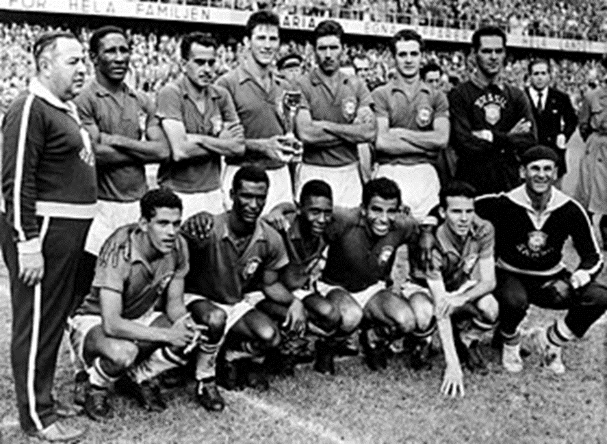
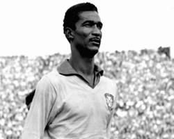
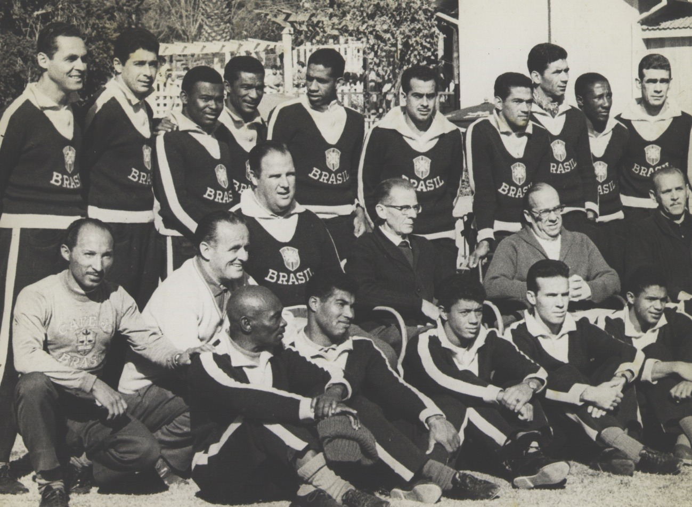
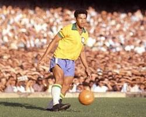
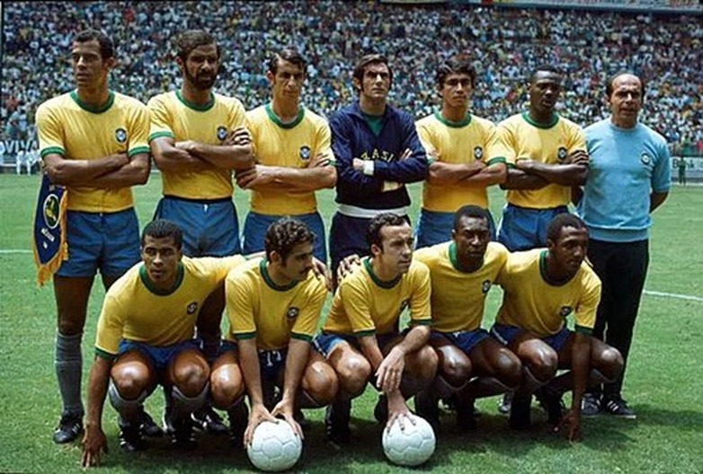
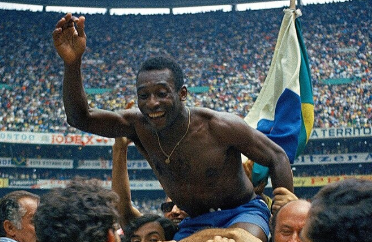
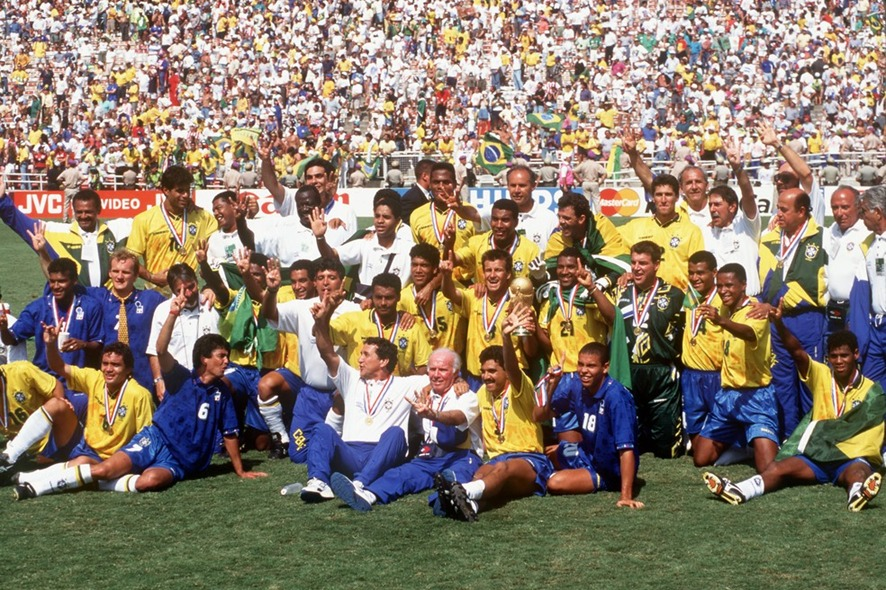
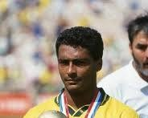
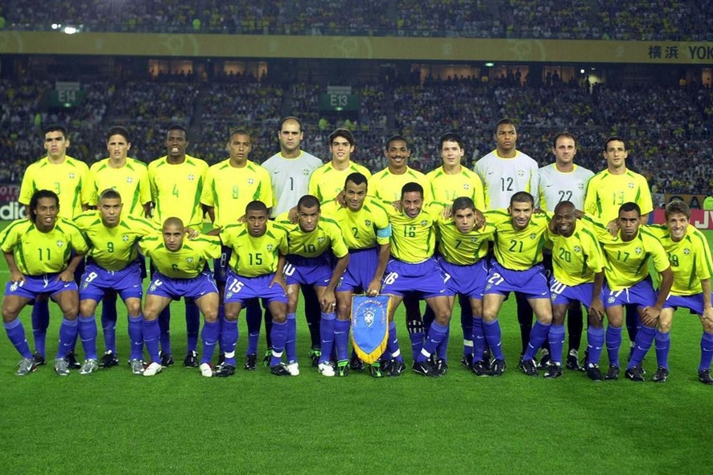
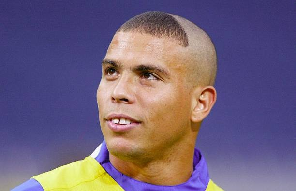

Explore os momentos mais históricos da Seleção Brasileira nas Copas do Mundo.

A Copa de 1958 marcou o nascimento do Brasil como potência mundial no futebol. Com apenas 17 anos, Pelé encantou o planeta ao lado de Garrincha.
Sob o comando de Vicente Feola, a Seleção apresentou o inovador esquema 4-2-4, combinando velocidade, técnica e criatividade.
Na final contra a Suécia, o Brasil venceu por 5x2 e conquistou o primeiro título mundial de sua história.
Primeira estrela do Brasil • Suécia 1958

Em 1962, o Brasil chegou ao Chile como favorito, mas perdeu Pelé logo no início da competição devido a uma lesão.
Garrincha assumiu o protagonismo da equipe com atuações históricas, dribles desconcertantes e gols decisivos.
Na final contra a Tchecoslováquia, a Seleção virou a partida para 3x1 e confirmou o bicampeonato mundial.
O show de Garrincha • Chile 1962

A Seleção de 1970 é considerada por muitos especialistas como a maior equipe da história do futebol mundial.
Com Pelé, Jairzinho, Rivellino, Gérson e Tostão, o Brasil apresentou um futebol ofensivo e extremamente criativo.
Na final contra a Itália, venceu por 4x1 e eternizou o famoso gol coletivo de Carlos Alberto Torres.
O time perfeito • México 1970

Após 24 anos sem títulos mundiais, o Brasil voltou ao topo em 1994 com uma equipe extremamente eficiente.
Liderada por Dunga no meio-campo e pela dupla Romário e Bebeto, a Seleção fez uma campanha sólida e competitiva.
A final contra a Itália terminou empatada e foi decidida nos pênaltis, garantindo o tetracampeonato brasileiro.
O retorno ao topo • EUA 1994

A Copa de 2002 marcou a redenção de Ronaldo Fenômeno após graves lesões no joelho.
Sob o comando de Felipão, os “3 Rs” — Ronaldo, Rivaldo e Ronaldinho Gaúcho — lideraram uma campanha invicta.
Na final contra a Alemanha, Ronaldo marcou dois gols e garantiu o histórico pentacampeonato mundial.
O penta histórico • Coreia/Japão 2002